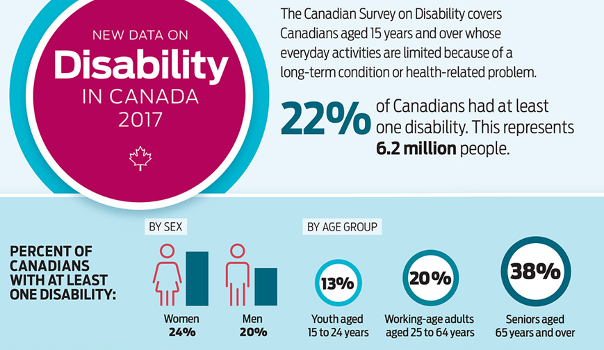

Accessibility Coaching Session Series
Find course reference here

What is this course?
This course is an introduction to accessibility (web / non-web), focusing on the ability to self-assess the compliance level of your asset.
What will I learn?
- All about acessibility;
- Context for disabilities in Canada;
- Overview of accessibility tools;
- Web Content Accessibility Guidelines;
- Self assessment checklists;
- Resources and contacting the ITAO.
Definitions
Web accessibility: The qualities that make a web
Usability: The qualities that make a web experience
Disability: A disability is any continuing condition that
Disabilities in Canada
How prevalent are different types of disabilities?
| Disability Type | Percentage |
|---|---|
| Pain | 15% |
| Flexibility | 10% |
| Mobility | 10% |
| Mental/Psychological | 7% |
| Dexterity | 5% |
| Hearing | 5% |
| Vision | 5% |
| Memory | 4% |
| Learning | 4% |
| Developmental | 1% |
Introduction to low vision tools
Take a look at this video on low vision tools.
Example of reed-green colour-blindness


Cognitive Disabilities
By far
In simple terms, a person who has a cognitive disability has trouble performing mental tasks that the average person would be able to do.
This category includes:
- Intellectual disability;
- Developmental delay and/or disability;
- Learning disabilities such as Dyslexia and ADHD.
Cognitive disabilities for IT consideration
Limited Comprehension: Inability to understand complex ideas.
Low Tolerance for Cognitive Overload: Frustration when sensing difficult situations, or when there are too many things in their environment happening at the same time.
Limited Problem-Solving Skills: When presented with a problem to solve, some people with cognitive disabilities may simply be unable to solve it.
Short-Term Memory Loss: May have a hard time remembering things from one moment to the next. Inability to focus on new information, so they don't retain it in the short term.
Cognitive disabilities for IT consideration cont.
Attention Deficit: Some users experience attention deficits, making it hard for them to focus on the task at hand.
Difficulty Reading: Some users experience attention deficits, making it hard for them to focus on the task at hand.
: Some users experience attention deficits, making it hard for them to focus on the task at hand.
: Some users experience attention deficits, making it hard for them to focus on the task at hand.
Accessibility
“Accessibility refers to the design of products, devices, services, or environments for people who experience disabilities.”
Source: Wikipedia: Accessibility
#a11y
a ccessibilit (11 letters) y

Image is an illustration by Heydon Pickering which you can see on Dribble.
Types of disabilities
- Cognitive
- Developmental
- Intellectual
- Mental
- Physical
- Sensory
* Any combination of the above
Stats
Over 11% of Canadian adults experienced one of the three most prevalent disability types: pain, mobility or flexibility. Of those who reported at least one of these disability types in 2012, more than 40% experienced all three at the same time.
Source: Disability in Canada: Initial findings from the Canadian Survey on Disability from 2012
Prevalence of disability by type, Canada, 2012
| Disability type | % |
|---|---|
| Pain | 9.7 |
| Flexibility | 7.6 |
| Mobility | 7.2 |
| Mental/psychological | 3.9 |
| Dexterity | 3.5 |
| Hearing | 3.2 |
| Seeing | 2.7 |
| Memory | 2.3 |
| Learning | 2.3 |
| Developmental | 0.6 |
| Unknown | 0.3 |
Other stats
- The prevalence of disability increases steadily with age
- Women have a higher prevalence of disability in almost all age groups
- Over one-quarter of persons with disabilities classified as having a very severe disability
- More than 8 out of 10 persons with disabilities use aids and assistive devices
Universal design / Inclusive design
“Universal design refers to broad-spectrum ideas meant to produce buildings, products and environments that are inherently accessible to older people, people without disabilities, and people with disabilities.”
Source: Wikipedia: Universal design
Univeral Design is a process. Accessibility is the outcome.
Designing for everyone
Google bot is disabled
Excerpt from George Orwell's Nineteen Eighty-Four
“It was a bright cold day in April, and the clocks were striking thirteen. Winston Smith, his chin nuzzled into his breast in an effort to escape the vile wind, slipped quickly through the glass doors of Victory Mansions, though not quickly enough to prevent a swirl of gritty dust from enteringalong with him.
The hallway smelt of boiled cabbage and old rag mats. At one end of it a coloured poster,too large for indoor display, had been tacked to the wall. It depicted simply an enormous face, more than a metre wide: the face of a man of about forty-five, with a heavy black moustache and ruggedly handsome features. Winston made for the stairs. It was no use trying the lift. Even at the best of times it was seldom working, and at present the electric current was cut off during daylight hours. It was part of the economy drive in preparation for Hate Week. The flat was seven flights up, and Winston, who was thirty-nine and had a varicose ulcer above his right ankle, went slowly, resting several times on the way. On each landing, opposite the lift-shaft, the poster with the enormous face gazed from the wall. It was one of those pictures which are so contrived that the eyes follow you about when you move. BIG BROTHER IS WATCHING YOU, the caption beneath it ran.
Inside the flat a fruity voice was reading out a list of figures which had something to do withthe production of pig-iron. The voice came from an oblong metal plaque like a dulled mirror which formed part of the surface of the right-hand wall. Winston turned a switch and the voice sank somewhat, though the words were still distinguishable. The instrument (the telescreen, it was called) could be dimmed, but there was no way of shutting it off completely. He moved over to the window: a smallish, frail figure, the meagreness of his body merely emphasized by the blue overalls which were the uniform of the party. His hair was very fair, his face naturally sanguine, his skin roughened by coarse soap and blunt razor blades and the cold of the winter that had just ended.”
Dos and Don'ts when designing a website.
Developing P.O.U.R.-ly
Perceivable
Operable
Understandable
Robust
Web Content Accessibility Guidelines
The Web Content Accessibility Guidelines (WCAG) are part of a series of web accessibility guidelines published by the Web Accessibility Initiative (WAI) of the World Wide Web Consortium (W3C), the main international standards organization for the Internet.
Assistive technology (AT)
“Assistive technology is an umbrella term that includes assistive, adaptive, and rehabilitative devices for people with disabilities while also including the process used in selecting, locating, and using them.”
Source: Wikipedia: Assistive technology
Sign language interpreter
MotionSavvy's Uni - a two way communication tool for the deaf and hearing
Talking glasses
Google makes spoons?!?!
Artificial Intelligence (AI) for Accessibility
- AI could provide automatic sign language provision
- AI already provides language translation and captioning for people who are deaf
- AI provides automatic image recognition and alt text for people who are blind
- AI could help make information easier to understand for those with reading difficulties
- AI could eventually make entire websites accessible!
Mobile screen readers
- Apple: VoiceOver
- Google / Android: TalkBack
Resources
Podcast
Technology Knowledge
Follow them on Twitter!
- @kellykbergeron - Executive Director of Cornwall Innovation Centre
- @cwlinnovates - Cornwall Innovation Centre
- @webaim
- @vavroom